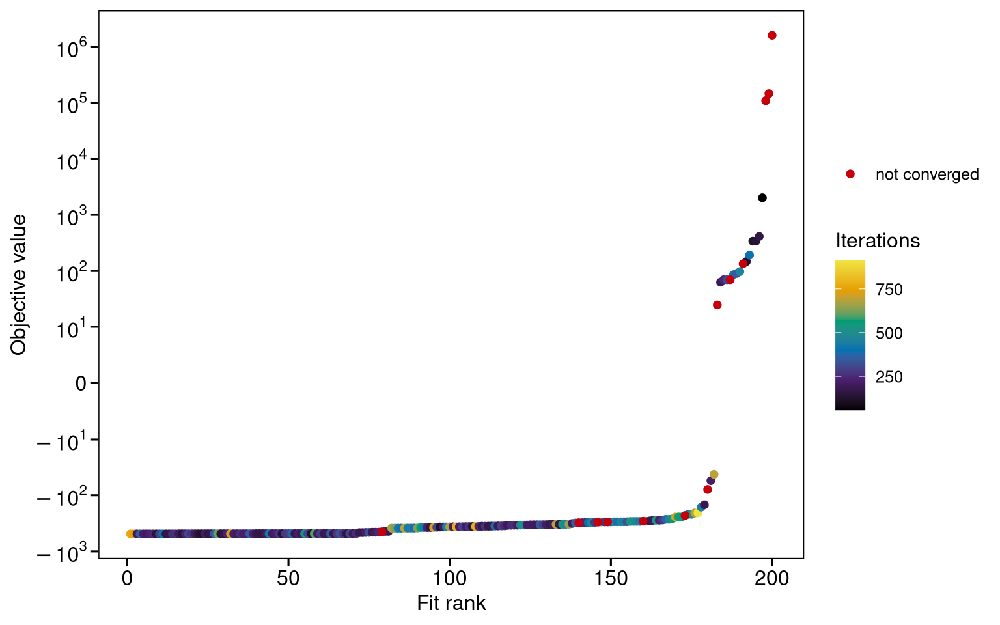
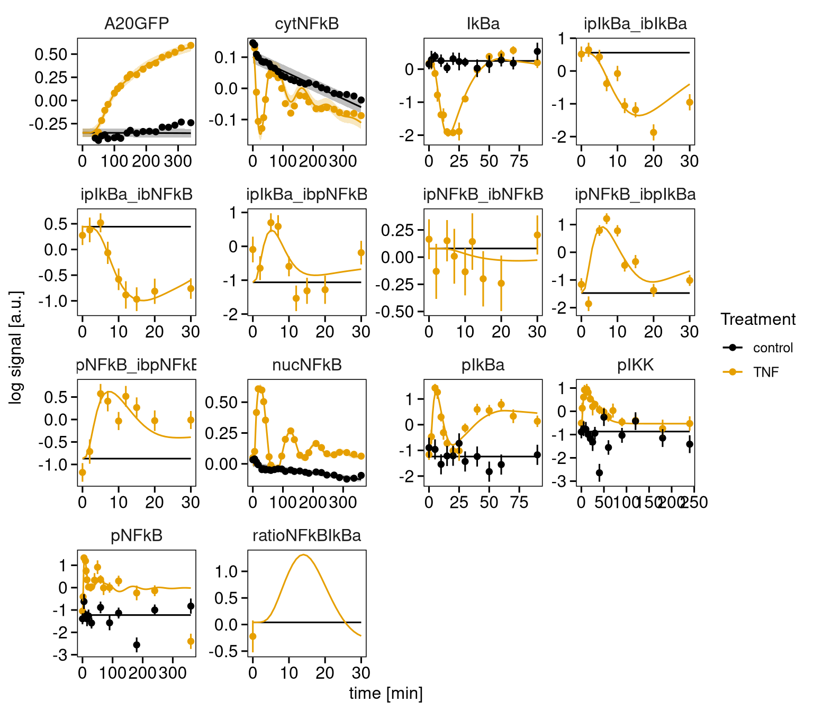

NFκB signaling (Oppelt 2018)
Source:vignettes/articles/oppeltNPJSystBiolAppl2018.Rmd
oppeltNPJSystBiolAppl2018.Rmd[1] TRUE TRUE TRUE TRUE
Shows: Pimpl(), symmetryDetection(),
symmetryReduction(), mstrust(),
trust(), profile(),
constraintStability(), randomEffects(),
msem(), exportPEtab(),
importPEtab().
NFκB signaling in HepG2 cells after TNFα and the effects of five
hepatotoxic compounds, after Oppelt et al. (2018), npj Syst Biol Appl
4:23. The full model has 38 reactions in cytoplasm and nucleus and
starts from a steady state solved by Pimpl(); the
symmetries are removed by a gauge, and the profiles reduce it to the
core model of the publication. 312 measurements of untreated and
stimulated cells determine the model, 444 further ones the effects of
the compounds. Data of the publication; model after Daniel Kaschek’s
dMod implementation (dkaschek/dMod_Examples, TNFa). The guide
explains the code.
Files
| file | content |
|---|---|
data/oppelt2018.csv |
the measurements of the publication |
model.R |
data, the full model, the resting state, conditions, compiling, objective, the gauge |
symmetries.R |
the Lie symmetries of the full model and their reduction, saves
results/symmetries.rds and
results/reduction.rds
|
fit.R |
multistart of 200 fits, saves results/fits.rds
|
onefit.R |
one fit from a start near the best fit, saves
results/onefit.rds for the guide |
sensitivities.R |
forward and reverse gradient and the exact Hessian at the best fit,
saves results/sensitivities.rds for the guide |
optimizers.R |
the Hessian sources of trust() from the same 100
starts, saves results/optimizers.rds for the guide |
profiles.R |
profiles of all parameters, saves
results/profiles.rds
|
variants.R |
core model of the publication and variants that release one setting,
likelihood ratios, saves results/variants.rds
|
reduced.R |
the model reduced by the limits the profiles point to |
refit.R |
fit and profiles of the reduced model, likelihood ratio, saves
results/reduced.rds
|
prediction.R |
prediction band of nuclear IκBα, saves
results/prediction.rds
|
compounds.R |
the changes the compounds cause, by spike-and-slab random effects,
saves results/compounds.rds
|
helix.R |
the expensive runs (multistarts, profiles, optimizers, compounds, the profiles of the reduced model and the prediction profiles) as array jobs of one or two cores per task on the Helix cluster |
petab.R |
the model as a PEtab problem with the resting state as a
pre-equilibration, written to results/petab/ and read
back |
plots.R |
figures from the saved results |
results/ |
saved results, each with the md5 of the files it is computed from in
the attribute "stamp"
|
Run
With this folder as working directory, in this order:
source("model.R") # compiles into build/
source("symmetries.R") # needs the Python package symident
source("fit.R")
source("onefit.R")
source("sensitivities.R")
source("optimizers.R")
source("profiles.R")
source("variants.R")
source("refit.R")
source("prediction.R")
source("compounds.R")
source("petab.R")
source("plots.R")model.R evaluates on the free cores of the machine and
compiles on six. plots.R fits nothing: it reads
results/ and simulates the compiled models.
Fit
200 fits, 180 converged. The best value is -488.675, reached by 9 fits within 0.1.


Reduction
The reduced model is the core model of the publication (Table S5)
with two delay steps of the A20 transcript, a separate factor
eta_split_pNfkpIkb for the release of pNFκB, and the NFκB
blot after NFκB precipitation reading the offset alone.
The profiles of the full model lead to a model with 16 fewer parameters, whose data term is 19.05 higher, below the 95% threshold of 26.30; 46 of the 47 parameters of the reduced model have a finite 95% interval. Profile likelihood shows the limits.